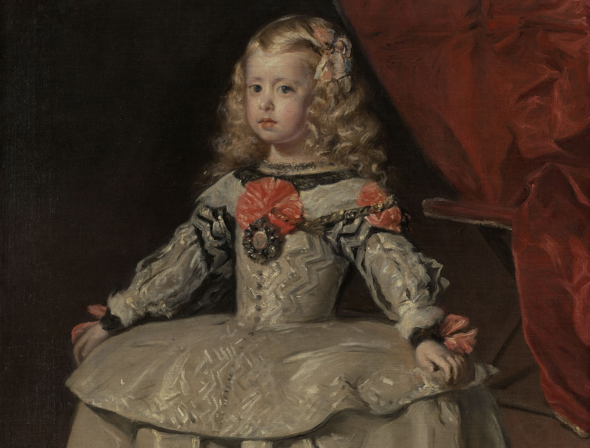

간만에카페인간만에카
작성글
99,999
작성댓글
99,999
좋아요
99,999
좋아한 콘텐츠 > 리뷰
좋아요한 콘텐츠가 없습니다.
-
내 귀에 캔디 arte25 120k 25
-
내 귀에 캔디 arte25 120k 25
-
 내 귀에 캔디 회원 9.025 120k 25
내 귀에 캔디 회원 9.025 120k 25 -
 내 귀에 캔디 arte25 120k 25
내 귀에 캔디 arte25 120k 25 -
내 귀에 캔디 회원 9.025 120k 25
-
내 귀에 캔디 회원 9.025 120k 25